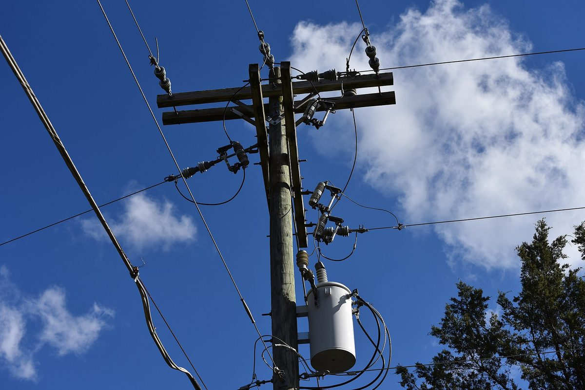

강원 햇빛소득마을 2차 선정 42곳 중 41곳 '조건부 승인'…전력망 여유 없어 바로 추진할 수 있는 곳은 원주 만종1리뿐

화천 풍산1리 1MW·연 2억 원 수익 계획도 계통 조건에 묶여…강원도, 한산한 시간에만 전기 보내는 '유연 접속'·ESS 배전망 연계 검토
강원도가 햇빛소득마을 2차 공모로 뽑은 42개 마을 가운데 41곳이 전력망 부족을 이유로 '조건부 승인'을 받아, 곧바로 사업에 들어갈 수 있는 곳은 원주 만종1리 한 곳에 그쳤다. 조건부 승인을 받은 마을은 발전소에서 만든 전기를 기존 전력망으로 내보내는 문제를 먼저 풀어야 사업을 진행할 수 있다. 화천군 풍산1리는 고령화로 농사가 버거워진 땅에 1MW급 태양광 발전소를 세워 해마다 2억 원의 수익을 내고 이를 마을 복지에 쓰겠다는 계획을 세웠지만, 이 조건에 묶여 첫발을 떼지 못하고 있다. 김현배 풍산1리 이장은 수익이 생기면 어르신과 주민을 위한 워크숍과 식사 대접 등에 쓸 생각이라고 밝혔다. 마을마다 부지와 주민 참여 의지는 갖췄지만 도내 전력망에 여유가 없는 상황이다. 강원도는 전력망이 한산한 시간에만 전기를 보내는 '유연 접속'과, 남는 전기를 에너지저장장치(ESS)에 모았다가 나중에 내보내는 배전망 연계 방식으로 지금 있는 설비 안에서 발전소 접속을 허용하는 방안을 검토하고 있다.
시민에너지 관점
42곳 중 41곳, 약 98%가 계통 조건에 묶였다는 것은 지금의 공모 선정이 사업의 출발이라기보다 접속 대기 순번에 가깝다는 뜻으로 보인다. 유연 접속이나 ESS를 붙이면 출력이 깎이거나 설비비가 늘어 마을 수익이 줄어든다는 우려가 나올 수 있지만, 전력망 보강만 기다리며 몇 년을 멈춰 서는 것보다 지금 있는 망을 나눠 쓰는 편이 빠르고, 남는 문제는 그 비용을 누가 대느냐다. 1MW 발전소로 연 2억 원을 벌어 마을 복지에 쓰겠다는 계획은 주민이 발전소의 주인이기에 가능한 설계이며, 이 수익이 계통 비용으로 빠져나가면 마을이 소유하는 의미도 그만큼 줄어든다. 정부와 강원도는 선정 마을 수와 함께 마을별 계통 접속 가능 시점을 공개하고, 유연 접속·ESS 비용은 마을이 아니라 국비·도비로 먼저 메운다는 원칙부터 세워야 한다.
출처: 춘천MBC 2026-10-29 김도균 원문 보기
江原道の太陽光所得村、2次選定42カ所のうち41カ所が条件付き承認…送電網に余裕なく、すぐ着手できるのは原州マンジョン1里だけ
華川プンサン1里の1MW・年2億ウォン収益計画も系統の条件に阻まれる…江原道、空いている時間帯だけ送電する柔軟接続とESSの配電網連系を検討
江原道が太陽光所得村の2次公募で選んだ42の村のうち41カ所が、送電網の不足を理由に「条件付き承認」となり、すぐに事業に入れるのは原州（ウォンジュ）のマンジョン1里の1カ所にとどまった。条件付き承認を受けた村は、発電所でつくった電気を既存の送電網に流す問題を先に解決しなければ事業を進められない。華川（ファチョン）郡プンサン1里は、高齢化で耕作が難しくなった土地に1MW級の太陽光発電所を建て、毎年2億ウォンの収益を上げて村の福祉に充てる計画を立てたが、この条件に阻まれて第一歩を踏み出せずにいる。キム・ヒョンベ里長は、収益が出ればお年寄りや住民のためのワークショップや食事のもてなしなどに使うつもりだと話した。どの村も用地と住民の参加意欲はそろっているが、道内の送電網に余裕がない状況だ。江原道は、送電網が空いている時間帯にだけ電気を送る「柔軟接続」と、余った電気をエネルギー貯蔵装置（ESS）にためて後で送り出す配電網連系の方式によって、今ある設備の範囲内で発電所の接続を認める案を検討している。
市民エネルギーの視点
42カ所中41カ所、約98％が系統の条件に縛られているということは、今の公募選定が事業の出発点というより接続待ちの順番に近いことを意味しているように見える。柔軟接続やESSを付ければ出力が削られたり設備費が増えたりして村の収益が減るとの懸念もありうるが、送電網の増強を待って何年も止まっているより、今ある網を分け合って使うほうが早く、残る問題はその費用を誰が負担するかだ。1MWの発電所で年2億ウォンを稼いで村の福祉に使うという計画は、住民が発電所の持ち主だからこそ成り立つ設計であり、その収益が系統の費用に流れ出れば、村が所有する意味もそれだけ薄れる。政府と江原道は、選定した村の数とあわせて村ごとの系統接続が可能になる時期を公開し、柔軟接続やESSの費用は村ではなく国費・道費でまず賄うという原則から定めるべきだ。
出典: Chuncheon MBC 2026-10-29 Kim Do-gyun 原文を読む
韩国江原道阳光收入村第二批入选42个村中41个获附条件批准，电网余量不足，可立即推进的只有原州Manjong1里
华川Pungsan1里1MW、年收益2亿韩元的计划也受电网条件所困，江原道研究只在电网空闲时送电的灵活接入和ESS配电网连接方案
韩国江原道通过阳光收入村第二批公开征选选出的42个村庄中，有41个因电网不足获得"附条件批准"，可以立即开展项目的只有原州Manjong1里一处。获得附条件批准的村庄，必须先解决把电站所发电力送入现有电网的问题，才能推进项目。华川郡Pungsan1里原计划在因老龄化而难以耕种的土地上建设1MW级太阳能电站，每年创造2亿韩元收益用于村庄福利，但受这一条件所困，至今未能起步。该村里长Kim Hyun-bae表示，有了收益后打算用于为老人和村民举办研修活动、请大家吃饭等。各村都已具备用地和村民的参与意愿，但道内电网没有余量。江原道正在研究两种方式，一是只在电网空闲时段送电的"灵活接入"，二是把多余电力先存入储能装置（ESS）、之后再送出的配电网连接方式，以便在现有设施范围内允许电站接入。
市民能源视角
42个村中有41个、约98%被电网条件卡住，这似乎说明目前的征选与其说是项目的起点，不如说更接近排队等待接入的号码。有人可能担心，采用灵活接入或加装ESS会削减出力、增加设备费用，从而减少村庄收益；但与其为等待电网扩建停摆好几年，不如先分用现有电网更快，剩下的问题是这笔费用由谁承担。用1MW电站每年赚2亿韩元用于村庄福利的计划，正因为村民是电站的主人才得以成立；如果这笔收益流向电网费用，村庄拥有电站的意义也会相应减弱。政府和江原道应在公布入选村庄数量的同时公开各村可接入电网的时间，并首先确立灵活接入和ESS费用不由村庄承担、而由国家和道财政先行填补的原则。
来源: Chuncheon MBC 2026-10-29 Kim Do-gyun 查看原文
41 of 42 Gangwon Sunlight Income Villages in second round get only conditional approval as grid runs out of room; just Manjong 1-ri in Wonju can start now
Pungsan 1-ri in Hwacheon, planning a 1 MW plant earning 2 billion won a year, is also held up by grid conditions; Gangwon Province weighs flexible connection and ESS-linked distribution
Of the 42 villages Gangwon Province selected in the second round of its Sunlight Income Village program, 41 received only "conditional approval" because of grid shortages, leaving Manjong 1-ri in Wonju as the only one that can go ahead right away. The conditionally approved villages must first solve the problem of feeding the power their plants produce into the existing grid before their projects can proceed. Pungsan 1-ri in Hwacheon County planned to build a 1 MW-class solar plant on land that ageing residents can no longer farm easily, earning 2 billion won a year to spend on village welfare, but the condition has kept it from taking the first step. Village head Kim Hyun-bae said that once income comes in he intends to use it for workshops and shared meals for older residents and other villagers. The villages have land and residents willing to take part, but the province's grid has no spare capacity. Gangwon Province is considering two ways to allow plants to connect within existing infrastructure: "flexible connection," which sends power only when the grid is lightly loaded, and linking the distribution grid with energy storage systems (ESS) that hold surplus power and release it later.
Citizen Energy View
With 41 of 42 villages, about 98%, tied up by grid conditions, selection in the program appears closer to a place in the connection queue than to the start of a project. Some may worry that flexible connection or added storage will curtail output or raise equipment costs and cut village income, but sharing the existing grid is faster than standing still for years waiting for reinforcement, and the real question is who pays for it. A plan to earn 2 billion won a year from a 1 MW plant for village welfare works only because residents own the plant, and if that income drains away into grid costs, the meaning of village ownership shrinks with it. The government and Gangwon Province should publish, alongside the number of selected villages, when each village can actually connect, and should first set the principle that flexible connection and storage costs are covered by national and provincial funds rather than by the villages.
Source: Chuncheon MBC 2026-10-29 Kim Do-gyun Read the original